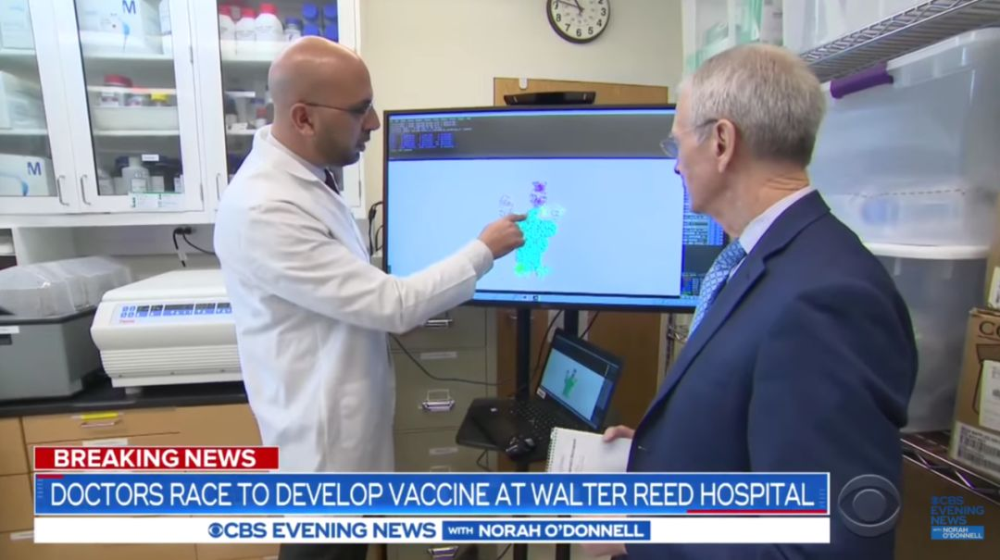

疫苗设计新进展！新冠病毒S蛋白超清结构图绘制成功，但实用疫苗还需要更多时间
原文链接 备份链接 昨日，Science 刊发了美国德克萨斯大学奥斯汀分校 Jason McLellan 团队的一篇关于新冠病毒的最新论文。该团队利用冷冻电镜技术解析出了新冠病毒 S 蛋白的超清结构。这一成果对开发疫苗和抗病毒药物有重要意 …

“当疫情成为新闻头条时，政府就砸钱去做研究。
但疫情新闻一消失，科研资助就没了。”


首例新冠病毒疫苗临床试验在西雅图进行（图片来源：CBS截屏）
2020年1月10日，当中国科学家张永振向世界公布新冠病毒基因序列的3小时候后，美国疫苗研发公司Inovio实验室就在电脑上的基因测序软件里设计出了新疫苗，并宣布最快将于今年夏天开始人体临床试验。这曾被认为是本世纪最快的疫苗研发记录之一，但现在，从走向临床试验的时间来看，这个记录正在被打破。
3月16日，位于美国西雅图的凯撒永久华盛顿研究所的科学家们，向4名健康的志愿者注射了第一针试验新冠疫苗。注射进受试人手臂的这只选疫苗代号为mRNA-1273，由美国国家过敏和传染性疾病研究所（NIAID）与Moderna公司联合开发。后者专门生产基于信使核糖核酸(mRNA)的疫苗。
就在美国的试验疫苗注入受试者体内一天后，3月17日，天津康希诺生物股份公司宣布，与中国军科院军事医学研究院生物工程研究所联合开发的腺病毒载体疫苗，已经开始临床试验的准备工作和受试者招募。18日早晨，康希诺又发布公告称，该候选疫苗已经获批进入临床试验阶段。眼下，由军科院研究员、工程院院士陈薇领衔的这一合作团队，已经成为中国跑得最快的疫苗研发选手。
据不完全统计，截至3月8日，全球大约有64项针对新冠病毒的疫苗在研项目，其中，中国单独攻关及与他国合作的项目共36个。一场全球疫苗研发竞赛正在激烈展开。
五大技术路线攻关疫苗
清华大学全球健康与传染病研究中心主任张林琦曾参与过MERS疫苗的研发，他解释说，新冠疫苗的研发原理，就是要诱导出对这个病毒有很强的中和能力的抗体，这也是现在所有疫苗策略最重要的目标之一。但在这场竞赛中，达到目标的方法却各不相同。
中国共布局了5条新冠疫苗研发的技术路线，具体包括灭活疫苗、基因工程重组的亚单位疫苗、腺病毒载体疫苗、减毒流感病毒载体疫苗与基于mRNA和DNA的核酸疫苗。其中，灭活疫苗与减毒流感病毒载体疫苗没有看到全球其他国家有相关报道，另外三种与国外研发基本同步。不过，由于中国没有开展过mRNA疫苗临床研究的先例，未来在临床研究环节也许国外某些研发机构会超越中国。
3月17日下午，在国务院联防联控机制新闻发布会上，中国工程院院士王军志介绍说，5大技术方向疫苗总体进展顺利，第一批确定的9项任务都已完成动物研究大部分工作。大部分研发团队4月份都能完成临床前研究，并逐步启动临床试验。
上海市疾病预防控制中心原免疫规划科医师陶黎纳告诉《中国新闻周刊》，在5种方法里面，灭活疫苗是用被杀灭的病毒刺激健康人体内的免疫系统做成疫苗，其他路径都是基于一个相同的理论基础：病毒上的S蛋白可以引起人体免疫保护机制，所以这些疫苗都是针对S蛋白靶点的。基因工程重组的亚单位疫苗在体外生产S蛋白，腺病毒及核酸技术都是在体内产生S蛋白，腺病毒载体疫苗在埃博拉疫苗上使用过，虽然获得批准但并未在人群中真正使用，核酸疫苗更是一种全新技术，从来没在人体上使用过。
在全球公布了拟采用制备技术的51个新冠疫苗项目中，使用传统减活或灭活技术的产品只有6个，而近年才出现的病毒载体和mRNA疫苗技术更受研发人员青睐。而国家教育部科技司司长雷朝滋3月17日则透露说，目前厦门大学、四川大学、清华大学、北京大学、复旦大学等高校的科研团队都已参与到疫苗攻关中，他还指出，重点是流感病毒载体疫苗、重组蛋白疫苗、核酸疫苗三条技术路线。
此次中国与美国分别取得新进展的两种实验疫苗，恰好都属于比较新的疫苗开发技术。美国临床试验疫苗所采用的技术，是根据病毒的基因序列特征，即靶点，针对性地设计出靶向mRNA，再通过一定的递送系统进入人体细胞，让人的免疫系统识别病毒特征，产生抗体。所谓递送系统，就是给mRNA包上特别的壳，通过壳与细胞膜的融合，让假病毒进入人体。
美国国立卫生研究院介绍说，此前NIAID与Moderna的科学家在MERS疫情中进行过针对S蛋白靶点的疫苗研究。他们在MERS病毒疫苗的基础上，把相应序列替换成新冠病毒的序列，然后快速制备出新冠病毒的mRNA疫苗。
NIAID所长安东尼·福奇于今年2月份接受《中国新闻周刊》采访时曾表示，自2003年出现SARS以来，学界对冠状病毒认识的进步，可大幅缩短疫苗的开发时间。因此，从拿到新冠病毒的基因序列到一期临床试验，他希望这一过程能够缩短至3个月。但如今的事实表明，实际过程比3个月还要短。
3月初，国内网络曾一度热传“军事科学院陈薇院士接种新冠疫苗”的图文，此后被证实为假消息，实际上是陈薇赴武汉前，注射提高免疫力药物的照片。然而，她带领的科学团队与康希诺公司联合研发的腺病毒载体疫苗，的确是眼下这场国际竞赛中，中国代表团里的“种子选手”。他们采用基因工程方法构建，以复制缺陷型人5型腺病毒为载体，可表达新型冠状病毒S抗原。
一位在疫苗研发企业工作的员工介绍说，腺病毒原来是一个正20面体形状的病毒，将一段新冠病毒的基因递送进该病毒以后，20面体上会出现刺突。腺病毒本身毒力很弱，所以可以用它把新冠病毒的刺突带进体内免疫系统。不过，这并非独创思路。2月5日，美国强生公司宣布，将利用其埃博拉疫苗平台——腺病毒载体平台研发新冠疫苗，并指出该疫苗从研发到量产至少需要8个月。
军科院与康希诺公司的此次联手，并非是两个机构的首次合作。2009年注册于天津的康希诺生物，主要从事人用疫苗的研发与生产，目前有针对肺炎、结核病、埃博拉病毒、脑膜炎、百白破等疾病的15种疫苗产品。2017年，其与军科院联合研制的埃博拉病毒疫苗Ad5-EBOV注册申请获批，使中国成为世界上第三个成功研发埃博拉病毒疫苗的国家。
一年内难以投入使用
清华大学药学院院长、全球健康药物研发中心主任丁胜说，现在这几种疫苗研发方法，从产生合理的免疫原性、未来产量、安全性等等方面都有各自的特点，很难比较孰优孰劣。
香港大学李嘉诚医学院艾滋病研究所所长陈志伟所带领的团队也是此次新冠疫苗研究力量之一，他们的技术路径是基于DNA的核酸疫苗，在动物试验中已初步得到比较好的免疫效果，也在为进入临床试验做准备。他告诉《中国新闻周刊》，哪种疫苗真正今后能用到人体上，现在还不好说。

全球多项新冠病毒疫苗研究展开竞赛。（图片来源：CBS截屏）
陈志伟指出，mRNA核酸疫苗的优势是快，制备简单，只需要合成RNA再进行扩增生产，但基于DNA和RNA的疫苗国际上至今还没有一个批准可以正式在人身上使用的。一个重要原因就是它的有效性问题，即这种疫苗进入体内有没有足够的诱导保护免疫的能力。
另一方面，因为没有获批上市的疫苗，也就意味着产业化是不成熟的，后续能否满足成千上万的大规模人群应用也是难点。2月10日，中国疾控中心、上海同济大学医学院和斯微生物公司基于mRNA平台共同设计开发的新冠病毒疫苗已经开启动物试验，在100多只健康小鼠身上注射。作为国内mRNA技术的领头羊企业，斯微生物CEO李航文接受媒体采访时曾指出，该技术的一大挑战就是mRNA的大规模生产，因为中国以前在该领域非常薄弱，没有公司开展mRNA的商业化生产和供应，所以公司要自行完成mRNA合成生产，且须有可控的大规模稳定生产的mRNA供应链体系。
一位从事新冠疫苗研发的专家告诉《中国新闻周刊》，关于国内最被看好的腺病毒载体疫苗，也存在一定风险。从理论上来说，大概80%的中国人有5型腺病毒抗体阳性，意味着多数人已经感染过，当腺病毒再次进入体内，身体内的腺病毒抗体会攻击载体而非它表达的S蛋白，从而令疫苗失效，这通常称为载体阻碍效应，或者预存免疫。
2004年，默沙东公司研发的5型腺病毒疫苗，在艾滋病中就被证明既不能有效预防病毒感染，也不能减少病毒携带者体内的血浆病毒载量，长期跟踪甚至发现注射疫苗的人感染风险反而更高，该试验于2007年年宣告失败并成为艾滋病疫苗研发史上最沉重一击。
徐建青是上海市公共卫生临床中心新发与再现传染病研究所所长，也是该机构新冠疫苗研发团队的主要负责人。他不便透露研究进展，仅表示他们采用的人源细胞载体疫苗技术是首次用于传染病疫苗的制备方法。
徐建青表示，港大另一个团队研发的减毒流感病毒载体疫苗也可能存在预存免疫问题，这取决于选用的流感载体人类之前是否感染过。不过，陈志伟认为，这种疫苗在产业化上至少具备很明显的优势——现在国内有很多流感疫苗的生产公司，一旦这种疫苗成功，每年甚至可以生产出上亿只疫苗产品。
陶黎纳认为，从研发来说，转基因重组技术是比较稳妥的，且基于该技术的现有疫苗很多，也就意味着研发出来以后有现成生产线，量产不会成为难题。在采用该技术的团队中，他认为尤其值得关注的是中科院微生物所与智飞生物的这对组合，前者已经针对冠状病毒疫苗的研发做了大量基础工作，而后者2018年就已经布局MERS疫苗。
不管怎样，哪怕是目前全球跑得最快的NIAID，该机构所长安东尼·福奇告诉《中国新闻周刊》，即便3个月走完一期试验，又还需要3个月拿到结果，然后进入二期，在更大的人群中进行临床试验。“即使我们获得紧急使用许可，至少一年之内，疫苗也不太可能投入实际使用。”
在过去的几次流行病爆发中，科学界一直在探索速度与有效性之间如何平衡，然而，当既快又好的研发技术尚未找到时，面对一过性的大流行疾病，疫苗与药物一直存在研发困境。比如，十多年过去，针对SARS病毒的疫苗至今仍未上市。丁胜说，当时SARS疫苗有初步进展，也做了一定的人体实验，但是因为后来没有病人，也就没有人投入资金，所以难以开展。
新冠疫苗的命运又会如何？张林琦说，如果此次疫情持续时间较长，疫苗有效性将会得到评估；如果疫情过去了，我们能够做到临床的Ⅰ期实验来证明疫苗的安全性，万一今后新冠病毒再来的话，可以尽快地推进到保护性的评估阶段。
美国一家疫苗研究所的负责人波兰则评论说，“当疫情成为新闻头条时，政府就砸钱去做研究。但疫情新闻一消失，科研资助就没了。”陈志伟感激SARS后，因为美国国立卫生研究院的资金支持，他能一直进行相关研究，17年过后，当新冠病毒再次来袭，他之前的研究经验得以派上用场。他说，国家如何在平时进行有效的科研资助与技术储备，是需要决策者好好思考的一个问题。
值班编辑：石若萧
推荐阅读
▼


原文链接 备份链接 昨日，Science 刊发了美国德克萨斯大学奥斯汀分校 Jason McLellan 团队的一篇关于新冠病毒的最新论文。该团队利用冷冻电镜技术解析出了新冠病毒 S 蛋白的超清结构。这一成果对开发疫苗和抗病毒药物有重要意 …
原文链接 备份链接 流行病防范创新联盟CEO理查德·哈切特估算，要足够快地开发出新冠肺炎疫苗，需要在未来12到18个月内花费20亿美元 文 |《财经》记者 王晓枫 编辑 | 郝洲 北京时间3月16日晚，由军事科学院军事医学研究院陈薇院士 …
原文链接 备份链接 中国进度最快的新冠病毒疫苗，已经进入临床试验志愿者招募阶段。 今天（3月17日）上午，康希诺生物－Ｂ(06185.HK)发布公告称，公司与军科院生物工程研究所联合开发重组新型冠状病毒疫苗(腺病毒载体)，目前已递交新药临 …
原文链接 备份链接 越来越多的跨国药企开始加入研发新冠病毒疫苗的行列。 本周，法国药企赛诺菲（Sanofi）宣布将与美国卫生和公共服务部（HHS）合作，利用重组 DNA 平台生产疫苗。此前，美国强生（Johnson＆Johnson）也宣布 …
原文链接 备份链接 【财新网】（记者 周东旭）临床救治方案的优化和药物筛选、检测技术和产品、病毒病原学和流行病学、疫苗研发、动物模型构建是当前新冠肺炎科技攻关的五个主攻方向。2月15日，国务院联防联控机制举行发布会，介绍了科研最新进展。 …